Lined
chromodoris nudibranch
Chromodoris lineolata
Family Chromodorididae
updated
May 2020
Where
seen? This pretty nudibranch in a pin-striped suit is commonly encountered
on our Southern shores among living reefs and on coral rubble. Towards the late 2010's, they have also become commonly seen on our Northern shores. Sometimes,
it can be seen in large numbers.
Features: 2-3cm long. Long body
with broad tail, black with fine white lines. The body and the foot
are edged in a broad yellow or orange border with a black line along
the inner edge of the orange border. The tips of the flower-like gills
and the rhinophores are maroon to pink. The similar Chromodoris
striatella has a white body with fine black lines and a white
line along the inner edge of the orange border. |
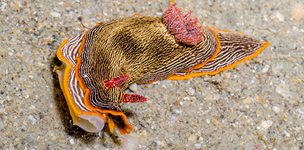
Sisters Island, Feb 06 |
|
Sometimes
mistaken for Armina nudibranchs.
The Lined chromodoris nudibranch has a feathery gill on its back while
armina nudibranchs don't.
What does it eat? It eats sponges, including the Silvery blue sponge.
Members of the Family Chromodorididae absorb the toxic chemicals in
their sponge food and incorporate these chemicals into the mantle
glands on their backs where they repel predators. |
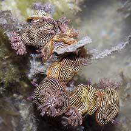
About 12 animals gathered together!
Pulau Semakau, Sep 05 |
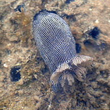
Head first into a hole in a sponge,
probably eating the sponge.
Pulau Semakau, Jun 19
Photo shared by Liz Lim on facebook. |
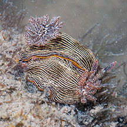
A pair in mating position.
Pulau Semakau, Apr 04 |
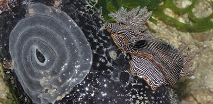
Egg coils next to a pair, laid by them?
Pulau Sekudu,May 12
Photo shared by James Koh on flickr.
|
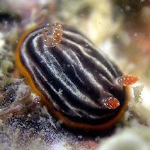
A really tiny one (2mm)
Big Sisters Island, Feb 26
Photo shared by Jianlin Liu on facebook |
| Lined
chromodoris nudibranchs on Singapore shores |
| Other sightings on Singapore shores |
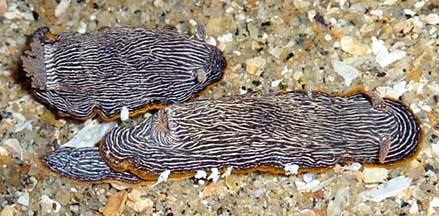
Pulau Ubin, Dec 10
Photo shared by Loh Kok Sheng on his
blog. |
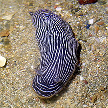
Pulau Sekudu, Jul 19
Photo shared by Jianlin Liu on facebook. |
|
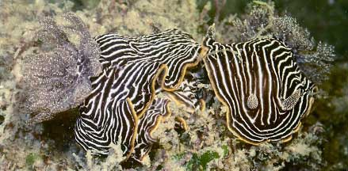
Chek Jawa, Jun 21
Photo shared by Toh Chay Hoon on facebook. |
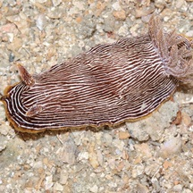
Pulau Sekudu, May 12
Photo shared by James Koh on his
blog. |
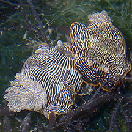
Pulau Sekudu, Jul 15
Photo shared by Toh Chay Hoon on facebook. |
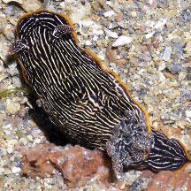
Pulau Sekudu, Jul 16
Photo shared by Loh Kok Sheng on his
blog. |
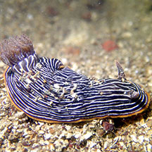
Beting Bronok, Jul 19
Photo shared by Jianlin Liu on facebook. |
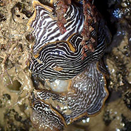
Beting Bronok, Jun 18
Photo shared by Toh Chay Hoon on facebook. |
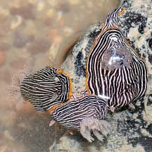
Beting Bronok, Jul 22
Photo shared by Loh Kok Sheng on facebook. |
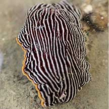
Tanah Merah Ferry Terminal, Jun 22
Photo shared by Vincent Choo on facebook. |
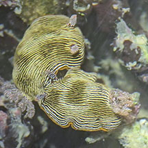
Sentosa Serapong, Jul 25
Photo shared by Che Cheng Neo on facebook |
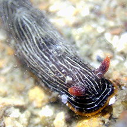
Big Sisters Island, Feb 25
Photo shared byJianlin Liu on facebook. |
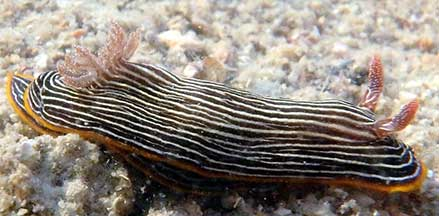
Lazarus Island, Nov 20
Photo shared by Loh Kok Sheng on facebook. |
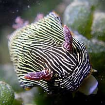
Pulau Tekukor, Aug 21
Photo shared byJianlin Liu on facebook. |
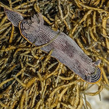
Terumbu Hantu, Jul 19
Photo shared by James Koh on flickr. |
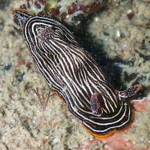
St John's Island, Feb 24
Photo shared by Toh Chay Hoon on facebook. |
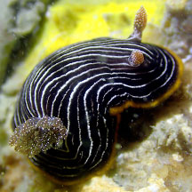
St John's Island, Feb 24
Photo shared by Jianlin Liu on facebook. |
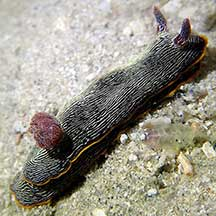
Cyrene, Apr 21
Photo shared byJianlin Liu on facebook. |
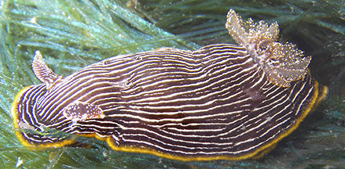
Cyrene Reef, Dec 08
Photo shared by Toh Chay Hoon on flickr |
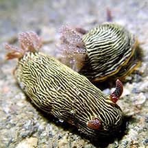
Pulau Semakau (East), Aug 21
Photo shared by Jianlin Liu on facebook. |
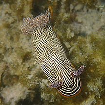
Terumbu Raya, Jun 15
Photo shared by Toh Chay Hoon on facebook. |
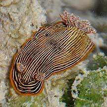
Terumbu Raya, May 10
Photo shared by Toh Chay Hoon on her
blog . |
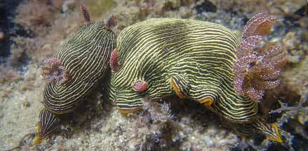
Terumbu Bemban, Apr 22
Photo shared by Jonathan Tan on facebook. |
|
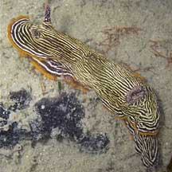
Terumbu Bemban, Jun 10
Photo shared by Toh Chay Hoon on her
blog. |
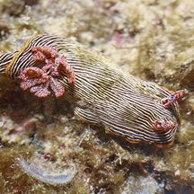
Terumbu Bemban, Jul 11
Photo shared by James Koh on flickr. |
|
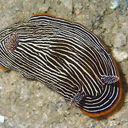
Beting Bemban Besar, May 17
Photo shared by Toh Chay Hoon on facebook. |
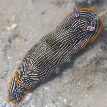
Beting Bemban Besar, Oct 25
Photo shared by Yan Le Su on facebook. |
|
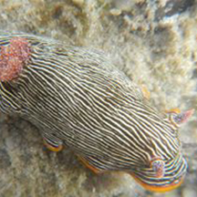
Terumbu Pempang Laut, Jun 14
Photo shared by Toh Chay Hoon on facebook. |
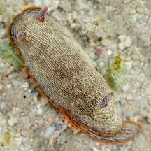
Terumbu Pempang Laut, Jan 22
Photo shared by Vincent Choo on facebook. |
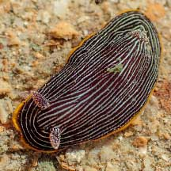
Terumbu Pempang Tengah, May 21
Photo shared by Vincent Choo on facebook. |
Links
References
- Tan Siong
Kiat and Henrietta P. M. Woo, 2010 Preliminary
Checklist of The Molluscs of Singapore (pdf), Raffles
Museum of Biodiversity Research, National University of Singapore.
- Chou,
L. M., 1998. A Guide to the Coral Reef Life of Singapore.
Singapore Science Centre. 128 pages.
- Debelius,
Helmut, 2001. Nudibranchs
and Sea Snails: Indo-Pacific Field Guide
IKAN-Unterwasserachiv, Frankfurt. 321 pp.
- Wells, Fred
E. and Clayton W. Bryce. 2000. Slugs
of Western Australia: A guide to the species from the Indian to
West Pacific Oceans.
Western Australian Museum. 184 pp.
- Coleman,
Neville. 2001. 1001
Nudibranchs: Catalogue of Indo-Pacific Sea Slugs. Neville
Coleman's Underwater Geographic Pty Ltd, Australia.144pp.
- Humann, Paul
and Ned Deloach. 2010. Reef
Creature Identification: Tropical Pacific New World Publications.
497pp.
- Coleman,
Neville, 1989. Nudibranchs
of the South Pacific Vol 1. 64 pp.
|
|
|